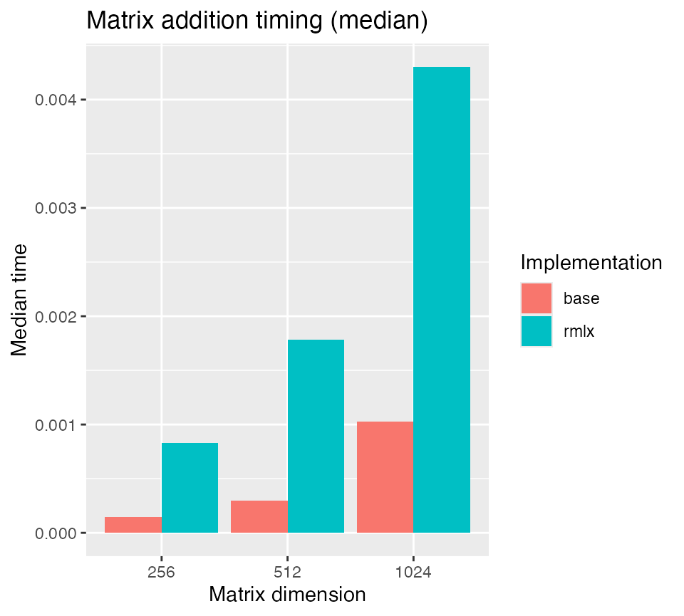
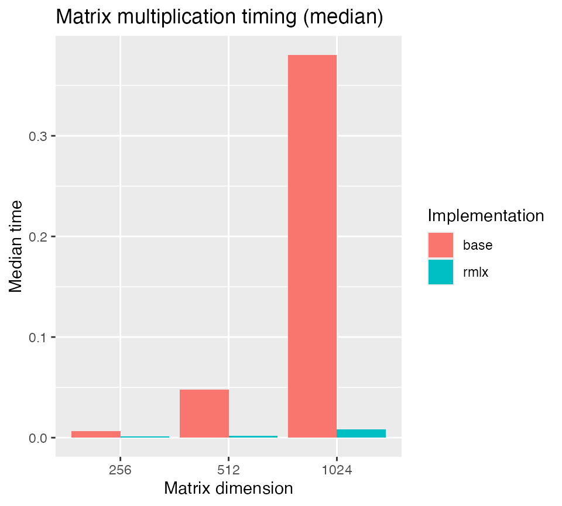

Performance Benchmarks
performance.RmdOverview
This vignette compares the runtime of a few core operations in base R
and Rmlx.
library(Rmlx)
#>
#> Attaching package: 'Rmlx'
#> The following object is masked from 'package:stats':
#>
#> fft
#> The following objects are masked from 'package:base':
#>
#> chol2inv, colMeans, colSums, diag, outer, rowMeans, rowSums, svd
library(bench)
library(dplyr)
#>
#> Attaching package: 'dplyr'
#> The following objects are masked from 'package:stats':
#>
#> filter, lag
#> The following objects are masked from 'package:base':
#>
#> intersect, setdiff, setequal, union
library(ggplot2)Matrix addition
mat_sizes <- c(256, 512, 1024)
add_results <- bind_rows(lapply(mat_sizes, function(n) {
A_r <- matrix(runif(n * n), n, n)
B_r <- matrix(runif(n * n), n, n)
A_mlx <- as_mlx(A_r)
B_mlx <- as_mlx(B_r)
mb <- bench::mark(
base = { A_r + B_r },
rmlx = { as.matrix(A_mlx + B_mlx) },
iterations = 5,
check = \(x, y) all.equal(x, y, tolerance = 1e-6)
)
mb$size <- n
mb
}))
ggplot(add_results, aes(x = factor(size), y = as.numeric(median),
fill = as.character(expression))) +
geom_col(position = "dodge") +
labs(
title = "Matrix addition timing (median)",
x = "Matrix dimension",
y = "Median time",
fill = "Implementation"
)
Matrix multiplication
matmul_results <- bind_rows(lapply(mat_sizes, function(n) {
A_r <- matrix(runif(n * n), n, n)
B_r <- matrix(runif(n * n), n, n)
A_mlx <- as_mlx(A_r)
B_mlx <- as_mlx(B_r)
mb <- bench::mark(
base = { A_r %*% B_r },
rmlx = { as.matrix(A_mlx %*% B_mlx) },
iterations = 3,
check = \(x, y) all.equal(x, y, tolerance = 1e-6)
)
mb$size <- n
mb
}))
ggplot(matmul_results, aes(x = factor(size), y = as.numeric(median),
fill = as.character(expression))) +
geom_col(position = "dodge") +
labs(
title = "Matrix multiplication timing (median)",
x = "Matrix dimension",
y = "Median time",
fill = "Implementation"
)
Linear system solves
solve_results <- bind_rows(lapply(mat_sizes, function(n) {
A_r <- matrix(rnorm(n * n), n, n)
A_r <- crossprod(A_r) + diag(n) * 1e-3
b_r <- matrix(rnorm(n), n, 1)
A_mlx <- as_mlx(A_r)
b_mlx <- as_mlx(b_r)
base_sol <- solve(A_r, b_r)
mlx_sol <- as.matrix(solve(A_mlx, b_mlx))
stopifnot(
max(abs(A_r %*% base_sol - b_r)) < 1e-8,
max(abs(A_r %*% mlx_sol - b_r)) < 5e-1
)
mb <- bench::mark(
base = { solve(A_r, b_r) },
rmlx = { as.matrix(solve(A_mlx, b_mlx)) },
iterations = 3,
check = FALSE
)
mb$size <- n
mb
}))
ggplot(solve_results, aes(x = factor(size), y = as.numeric(median),
fill = as.character(expression))) +
geom_col(position = "dodge") +
labs(
title = "Linear solve timing (median)",
x = "Matrix dimension",
y = "Median time",
fill = "Implementation"
)